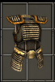

| 中文名称 | 套装奖励 | 组件名称 | 组件种类 | 组件属性 | 需要力量 | 需要敏捷 | 需要智力 | 需要等级 | 英文名称 |
| 巴比伦服饰 |
2 件奖励： 15% 元素抗性 +10% 移动速度 3 件奖励： 15% 元素抗性 +33 敏捷 +82 生命 +10% 移动速度 4 件奖励： +10% 护甲防御 15% 毒素抗性 15% 元素抗性 +33 敏捷 +82 生命 +10% 移动速度 全套奖励： +10% 护甲防御 30% 毒素抗性 15% 元素抗性 +33 敏捷 +82 生命 +10% 移动速度 +45点防御能力 |
巴比伦盾牌 |
盾 |
15% 机率格挡掉 125 伤害 2.50 秒格挡恢复 61 伤害 10 额外伤害 24% 穿刺抵抗 +6% 盾牌格挡 +24 点防御能力 套装：巴比伦服饰 组件之一 |
194 | 0 | 0 | 21 | Babylonian Raiment |
|
巴比伦人的长矛 |
矛 |
56 ~ 71 伤害 30% 穿刺 速度：0.10（基础攻速：72%） +14 力量 +14 敏捷 +10% 攻击速度 +22 点战斗能力 套装：巴比伦服饰 组件之一 |
96 | 188 | 0 | 20 | Babylonian Raiment | ||
巴比伦头盔 |
头(战) |
72 护甲 24% 闪电抗性 +18 力量 +25% 施展速度 +24 点战斗能力 套装：巴比伦服饰 组件之一 |
223 | 0 | 0 | 20 | Babylonian Raiment | ||
巴比伦人的护胫甲 (鞋后有一条黑线) |
腿(战) |
72 护甲 24% 冰冷抗性 +18 力量 +10% 移动速度 +15% 生命恢复速度 +24 点战斗能力 套装：巴比伦服饰 组件之一 |
223 | 0 | 0 | 20 | Babylonian Raiment | ||
|
巴比伦人护甲  |
胸(战) |
72 护甲 24% 火焰抗性 +18 力量 +22% 生命恢复速度 +24 点战斗能力 套装：巴比伦服饰 组件之一 |
223 | 0 | 0 | 20 | Babylonian Raiment |
|